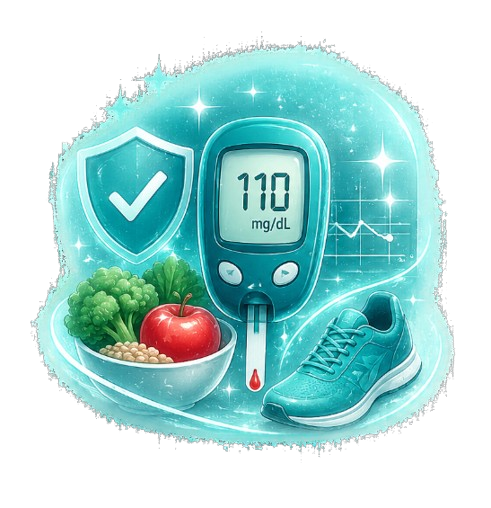
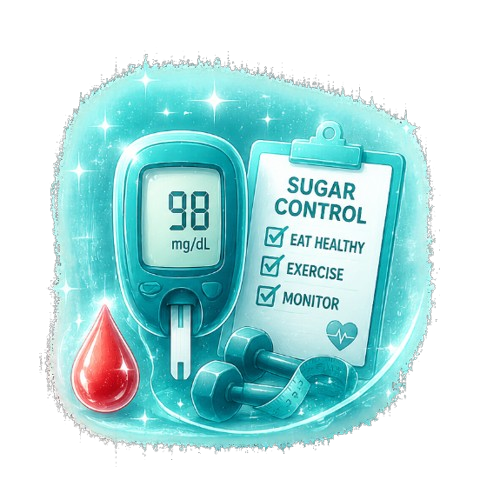

Personalized diabetes and sugar management programs focused on long-term wellness, balanced lifestyle, and preventive healthcare.

Sugar Management focuses on monitoring, controlling, and improving blood glucose levels through personalized treatment plans, nutrition guidance, lifestyle modifications, and preventive healthcare strategies.
At Serenity Medical, we combine advanced diagnostics with compassionate care to help patients manage diabetes effectively while improving overall health, energy, and quality of life.
Our specialists evaluate your lifestyle, medical history, glucose patterns, and overall health to design personalized sugar management programs that support sustainable wellness and long-term control.
Our services include:

Tailored care programs designed around your health goals.
Accurate assessments for smarter treatment decisions.
Sustainable lifestyle improvements for healthier living.
Medical, nutritional, and lifestyle guidance in one place.
Common questions about sugar management and diabetes care.
Healthy eating, exercise, weight management, and lifestyle changes can significantly improve blood sugar control alongside medical guidance.
The frequency depends on your condition, medications, and treatment plan. Our specialists create personalized monitoring schedules.
Highly processed foods, sugary beverages, and excess refined carbohydrates should be limited for better sugar control.
In many early-stage cases, lifestyle interventions and proper medical care can help achieve remission or significant improvement.